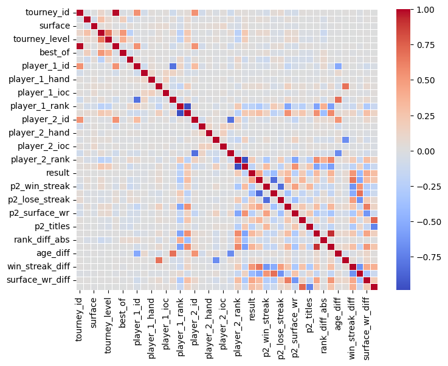
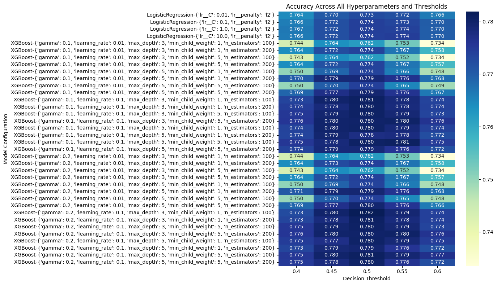
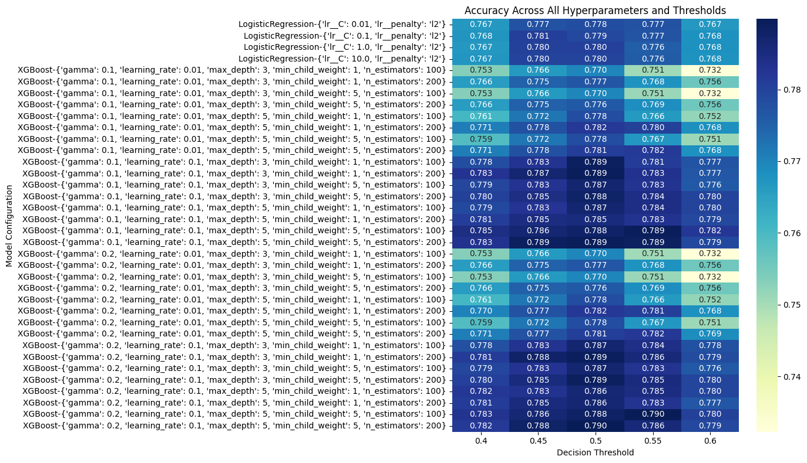
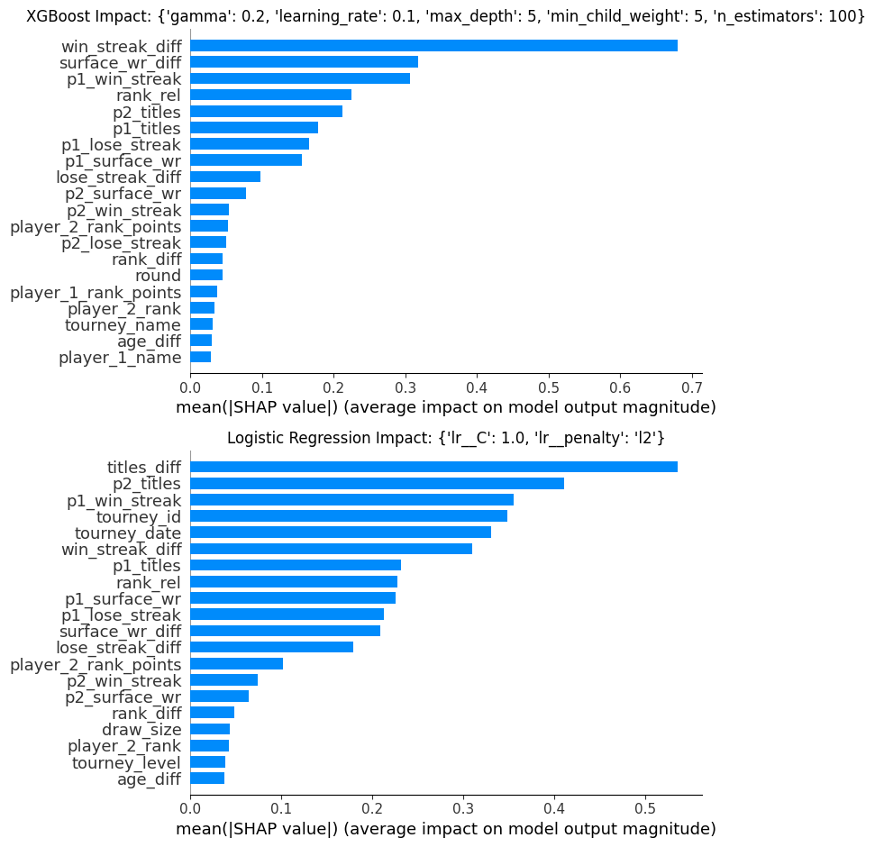
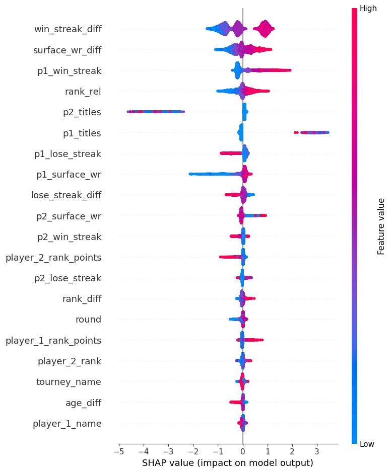
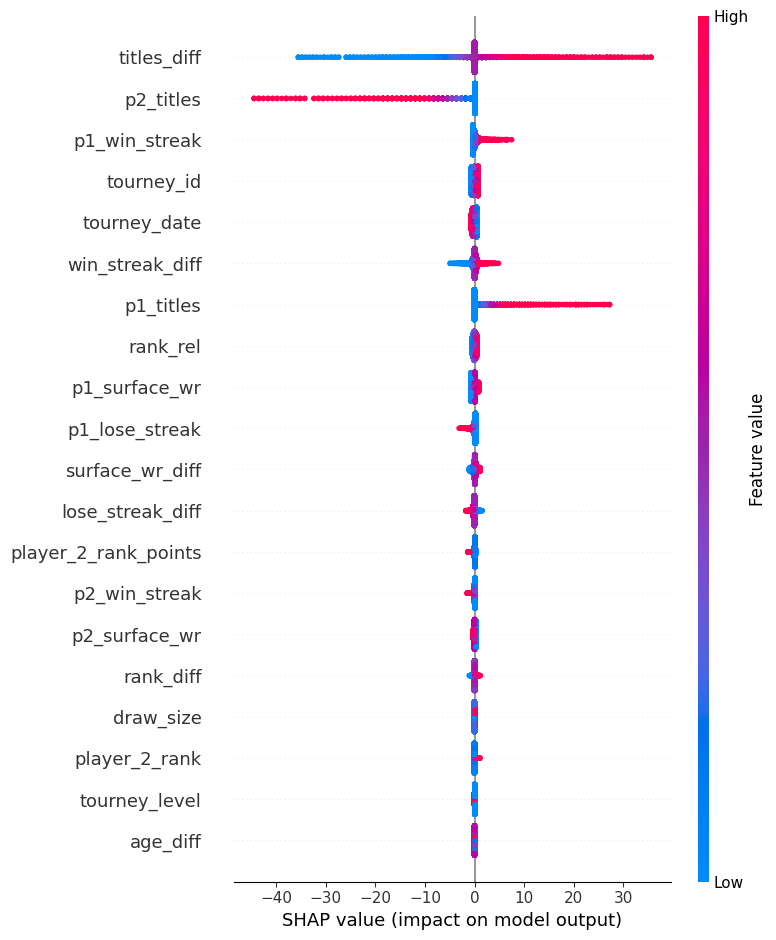

# 1. Standard Library
import random
from tqdm import tqdm
# 2. Data Manipulation & Numerical Computing
import numpy as np
import pandas as pd
# 3. Machine Learning & Preprocessing
import xgboost as xgb
import shap
from sklearn.model_selection import train_test_split, GridSearchCV, TimeSeriesSplit
from sklearn.preprocessing import StandardScaler
from sklearn.pipeline import Pipeline
from sklearn.linear_model import LogisticRegression
from sklearn.metrics import (
accuracy_score,
log_loss,
brier_score_loss,
f1_score,
classification_report,
confusion_matrix
)
# 4. Visualization
import matplotlib.pyplot as plt
import seaborn as sns
import plotly.graph_objects as goSpearman’s Correlation Matrix
df = pd.read_csv('final.csv')# Calculate the correlation matrix
correlation_matrix = df.corr(method='spearman')df.columnsIndex(['tourney_id', 'tourney_name', 'surface', 'draw_size', 'tourney_level',
'tourney_date', 'best_of', 'round', 'player_1_id', 'player_1_name',
'player_1_hand', 'player_1_ht', 'player_1_ioc', 'player_1_age',
'player_1_rank', 'player_1_rank_points', 'player_2_id', 'player_2_name',
'player_2_hand', 'player_2_ht', 'player_2_ioc', 'player_2_age',
'player_2_rank', 'player_2_rank_points', 'result', 'p1_win_streak',
'p2_win_streak', 'p1_lose_streak', 'p2_lose_streak', 'p1_surface_wr',
'p2_surface_wr', 'p1_titles', 'p2_titles', 'rank_diff', 'rank_diff_abs',
'rank_rel', 'age_diff', 'height_diff', 'win_streak_diff',
'lose_streak_diff', 'surface_wr_diff', 'titles_diff'],
dtype='object')# Set the size of the plot
plt.figure(figsize=(8, 6))
# Create the heatmap
sns.heatmap(
correlation_matrix,
annot=False,
cmap='coolwarm',
fmt=".2f",
linewidths=.5,
cbar=True
)
#plt.title('Feature Correlation Matrix')
plt.show()
# Get the correlations of all features against 'Price'
result_correlations = correlation_matrix['result'].sort_values(ascending=False)
print(result_correlations[:8])
print(result_correlations[-5:])result 1.000000
win_streak_diff 0.512831
p1_win_streak 0.444510
surface_wr_diff 0.428829
rank_rel 0.362046
rank_diff 0.319179
p1_surface_wr 0.314880
titles_diff 0.295758
Name: result, dtype: float64
player_1_rank -0.212891
p2_surface_wr -0.236545
p2_win_streak -0.244722
p1_lose_streak -0.396556
lose_streak_diff -0.408858
Name: result, dtype: float64Sorting according to tourney_date
# This compares row position n with row position n-1
for n in range(1, len(df)):
current_val = df['tourney_date'].iloc[n]
prev_val = df['tourney_date'].iloc[n-1]
if current_val < prev_val:
print(f"Error at position {n}: {prev_val} comes before {current_val}")Error at position 8770: 20171124 comes before 20171106
Error at position 8786: 20171106 comes before 20170922
Error at position 11684: 20181123 comes before 20180921
Error at position 14306: 20191121 comes before 20191120
Error at position 14310: 20191120 comes before 20191118
Error at position 14320: 20191121 comes before 20191119
Error at position 14324: 20191120 comes before 20191118
Error at position 14328: 20191121 comes before 20191120
Error at position 14330: 20191120 comes before 20191119
Error at position 14332: 20191119 comes before 20191118
Error at position 14340: 20191122 comes before 20191121
Error at position 14344: 20191124 comes before 20191123
Error at position 14346: 20191123 comes before 20191122
Error at position 14350: 20191123 comes before 20191122
Error at position 14352: 20191122 comes before 20190913
Error at position 14364: 20190914 comes before 20190913
Error at position 14380: 20190914 comes before 20190913
Error at position 14398: 20190914 comes before 20190405
Error at position 14405: 20190914 comes before 20190405
Error at position 14411: 20190914 comes before 20190913
Error at position 14418: 20190913 comes before 20190405
Error at position 14425: 20190913 comes before 20190405
Error at position 14433: 20190913 comes before 20190201
Error at position 14489: 20191105 comes before 20190920
Error at position 15824: 20201116 comes before 20200306
Error at position 16024: 20210724 comes before 20210426
Error at position 16109: 20210719 comes before 20210712
Error at position 16190: 20210726 comes before 20210607
Error at position 16217: 20210607 comes before 20210517
Error at position 16275: 20211025 comes before 20210920
Error at position 16357: 20211101 comes before 20210222
Error at position 16574: 20211004 comes before 20210301
Error at position 16687: 20210712 comes before 20210510
Error at position 16891: 20210816 comes before 20210419
Error at position 16965: 20211108 comes before 20211018
Error at position 16992: 20211018 comes before 20210719
Error at position 17019: 20210719 comes before 20210308
Error at position 17091: 20210315 comes before 20210308
Error at position 17118: 20210308 comes before 20210104
Error at position 17176: 20210614 comes before 20210301
Error at position 17245: 20211115 comes before 20210621
Error at position 17272: 20210621 comes before 20210315
Error at position 17358: 20210503 comes before 20210419
Error at position 17766: 20210830 comes before 20210208
Error at position 17967: 20210823 comes before 20210426
Error at position 18021: 20210927 comes before 20210719
Error at position 18075: 20211018 comes before 20210517
Error at position 18117: 20211108 comes before 20210202
Error at position 18174: 20210621 comes before 20210308
Error at position 18201: 20210308 comes before 20210201
Error at position 18310: 20210920 comes before 20210105
Error at position 18562: 20211128 comes before 20211127
Error at position 18566: 20211128 comes before 20211125
Error at position 18570: 20211127 comes before 20211125
Error at position 18576: 20211128 comes before 20211127
Error at position 18578: 20211127 comes before 20211125
Error at position 18582: 20211128 comes before 20211127
Error at position 18586: 20211128 comes before 20211126
Error at position 18590: 20211128 comes before 20211126
Error at position 18596: 20211203 comes before 20211130
Error at position 18598: 20211130 comes before 20211129
Error at position 18602: 20211205 comes before 20211204
Error at position 18604: 20211204 comes before 20211202
Error at position 18606: 20211202 comes before 20211201
Error at position 18608: 20211201 comes before 20211126
Error at position 18611: 20211126 comes before 20210918
Error at position 18619: 20210918 comes before 20210917
Error at position 18626: 20210918 comes before 20210917
Error at position 18632: 20210917 comes before 20210305
Error at position 18648: 20210918 comes before 20210917
Error at position 18654: 20211126 comes before 20210917
Error at position 18664: 20210918 comes before 20210305
Error at position 18673: 20210918 comes before 20210917
Error at position 21402: 20221114 comes before 20220917
Error at position 21404: 20220917 comes before 20220913
Error at position 21410: 20220916 comes before 20220914
Error at position 21414: 20220918 comes before 20220916
Error at position 21418: 20220918 comes before 20220914
Error at position 21420: 20220914 comes before 20220913
Error at position 21426: 20220917 comes before 20220913
Error at position 21432: 20220917 comes before 20220914
Error at position 21436: 20220918 comes before 20220916
Error at position 21440: 20220918 comes before 20220916
Error at position 21442: 20220916 comes before 20220913
Error at position 21452: 20221125 comes before 20221122
Error at position 21456: 20221127 comes before 20221123
Error at position 21462: 20221126 comes before 20221124
Error at position 21464: 20221124 comes before 20220304
Error at position 21520: 20220917 comes before 20220916
Error at position 21527: 20220917 comes before 20220916
Error at position 21531: 20220916 comes before 20220915
Error at position 21543: 20220916 comes before 20220304
Error at position 21568: 20220917 comes before 20220916
Error at position 21580: 20220917 comes before 20220916
Error at position 21592: 20220917 comes before 20220916
Error at position 21599: 20220916 comes before 20220304
Error at position 23883: 20230828 comes before 20230204
Error at position 23896: 20230204 comes before 20230203
Error at position 23913: 20230204 comes before 20230203
Error at position 23933: 20230204 comes before 20230203
Error at position 23953: 20230203 comes before 20230202
Error at position 23975: 20230204 comes before 20230203df_sorted = df.sort_values(by='tourney_date').copy()
# This compares row position n with row position n-1
for n in range(1, len(df_sorted)):
current_val = df_sorted['tourney_date'].iloc[n]
prev_val = df_sorted['tourney_date'].iloc[n-1]
if current_val < prev_val:
print(f"Error at position {n}: {prev_val} comes before {current_val}")df_sorted.reset_index(drop=True, inplace=True)Baseline - coin flip:
X = df.drop('result', axis=1)
y = df['result']
X_train, X_test, y_train, y_test = train_test_split(X, y, test_size=0.2, shuffle=False)
coin_flip = []
for i in range(len(y_test)):
coin_flip.append(random.choice([0,1]))
y_test_arr = np.array(y_test)
accurate = 0
for i in range(len(y_test_arr)):
if y_test_arr[i] == coin_flip[i]:
accurate += 1
print(f'Presnoť: {accurate / len(y_test_arr):.2f}')Presnoť: 0.51Training Loop Definition
# 1. Setup Data
X = df_sorted.drop('result', axis=1)
y = df_sorted['result']
X_train, X_test, y_train, y_test = train_test_split(X, y, test_size=0.2, random_state=42)
# --- 2. METRICS FUNCTION ---
def get_metrics(y_true, y_probs, threshold=0.5):
y_pred = (y_probs >= threshold).astype(int)
return {
'accuracy': accuracy_score(y_true, y_pred),
'log_loss': log_loss(y_true, y_probs),
'f1': f1_score(y_true, y_pred),
'threshold': threshold
}
# 2. Define the TimeSeriesSplit
# This creates folds where the training set grows over time
tscv = TimeSeriesSplit(n_splits=10)
# --- 3. XGBOOST GRID SEARCH ---
print("Running XGBoost Grid Search...")
xgb_param_grid = {
'max_depth': [3, 5],
'min_child_weight': [1, 5],
'gamma': [0.1, 0.2],
'learning_rate': [0.01, 0.1],
'n_estimators': [100, 200]
}
# 3. Use this 'tscv' object inside your GridSearchCV
xgb_grid = GridSearchCV(
xgb.XGBClassifier(objective='binary:logistic', random_state=42),
param_grid=xgb_param_grid,
cv=tscv,
scoring='neg_log_loss',
n_jobs=-1
)
xgb_grid.fit(X_train, y_train)
# --- 4. LOGISTIC REGRESSION GRID SEARCH ---
print("Running Logistic Regression Grid Search...")
# We use a Pipeline to ensure scaling happens inside the cross-validation folds
lr_pipe = Pipeline([
('scaler', StandardScaler()),
('lr', LogisticRegression(max_iter=1000))
])
lr_param_grid = {
'lr__C': [0.01, 0.1, 1.0, 10.0], # Regularization strength
'lr__penalty': ['l2'] # lbfgs solver only supports l2 or None
}
lr_grid = GridSearchCV(
lr_pipe,
param_grid=lr_param_grid,
cv=tscv,
scoring='neg_log_loss'
)
lr_grid.fit(X_train, y_train)Running XGBoost Grid Search...
Running Logistic Regression Grid Search...GridSearchCV(cv=TimeSeriesSplit(gap=0, max_train_size=None, n_splits=10, test_size=None),
estimator=Pipeline(steps=[('scaler', StandardScaler()),
('lr',
LogisticRegression(max_iter=1000))]),
param_grid={'lr__C': [0.01, 0.1, 1.0, 10.0],
'lr__penalty': ['l2']},
scoring='neg_log_loss')In a Jupyter environment, please rerun this cell to show the HTML representation or trust the notebook. On GitHub, the HTML representation is unable to render, please try loading this page with nbviewer.org.
Parameters
| estimator | Pipeline(step..._iter=1000))]) | |
| param_grid | {'lr__C': [0.01, 0.1, ...], 'lr__penalty': ['l2']} | |
| scoring | 'neg_log_loss' | |
| n_jobs | None | |
| refit | True | |
| cv | TimeSeriesSpl...est_size=None) | |
| verbose | 0 | |
| pre_dispatch | '2*n_jobs' | |
| error_score | nan | |
| return_train_score | False |
Parameters
| copy | True | |
| with_mean | True | |
| with_std | True |
Parameters
| penalty | 'l2' | |
| dual | False | |
| tol | 0.0001 | |
| C | 1.0 | |
| fit_intercept | True | |
| intercept_scaling | 1 | |
| class_weight | None | |
| random_state | None | |
| solver | 'lbfgs' | |
| max_iter | 1000 | |
| multi_class | 'deprecated' | |
| verbose | 0 | |
| warm_start | False | |
| n_jobs | None | |
| l1_ratio | None |
# This is how are the data split for testing
tscv = TimeSeriesSplit(n_splits=10)
for i, (train_index, test_index) in enumerate(tscv.split(X_test)):
print(f"Fold {i}:")
print(f" Train: index {train_index[0]} to {train_index[-1]}")
print(f" Test: index {test_index[0]} to {test_index[-1]}")Fold 0:
Train: index 0 to 435
Test: index 436 to 871
Fold 1:
Train: index 0 to 871
Test: index 872 to 1307
Fold 2:
Train: index 0 to 1307
Test: index 1308 to 1743
Fold 3:
Train: index 0 to 1743
Test: index 1744 to 2179
Fold 4:
Train: index 0 to 2179
Test: index 2180 to 2615
Fold 5:
Train: index 0 to 2615
Test: index 2616 to 3051
Fold 6:
Train: index 0 to 3051
Test: index 3052 to 3487
Fold 7:
Train: index 0 to 3487
Test: index 3488 to 3923
Fold 8:
Train: index 0 to 3923
Test: index 3924 to 4359
Fold 9:
Train: index 0 to 4359
Test: index 4360 to 4795Training & Testing Execution
results_all_detailed = []
thresholds = [0.4, 0.45, 0.5, 0.55, 0.6]
searches = [('XGBoost', xgb_grid), ('LogisticRegression', lr_grid)]
for model_name, grid in searches:
print(f"Processing all iterations for {model_name}...")
all_params = grid.cv_results_['params']
# Use tqdm to track progress through hyperparameter combinations
for i, params in enumerate(tqdm(all_params)):
# 1. Recreate the model
if model_name == 'XGBoost':
current_model = xgb.XGBClassifier(**params, objective='binary:logistic', random_state=42)
else:
lr_params = {k.replace('lr__', ''): v for k, v in params.items()}
current_model = Pipeline([
('scaler', StandardScaler()),
('lr', LogisticRegression(**lr_params, max_iter=1000))
])
# 2. Manual OOF Cross-Validation (on X_train)
oof_probs = []
oof_true = []
for train_idx, val_idx in tscv.split(X_train):
X_f_train, X_f_val = X_train.iloc[train_idx], X_train.iloc[val_idx]
y_f_train, y_f_val = y_train.iloc[train_idx], y_train.iloc[val_idx]
current_model.fit(X_f_train, y_f_train)
oof_probs.extend(current_model.predict_proba(X_f_val)[:, 1])
oof_true.extend(y_f_val)
oof_probs = np.array(oof_probs)
oof_true = np.array(oof_true)
# 3. Final Test Fit
current_model.fit(X_train, y_train)
test_probs = current_model.predict_proba(X_test)[:, 1]
# 4. SAVE EVERY THRESHOLD RESULT
for t in thresholds:
# Calculate metrics for this specific threshold on BOTH sets
train_metrics = get_metrics(oof_true, oof_probs, threshold=t)
test_metrics = get_metrics(y_test, test_probs, threshold=t)
entry = {
'model_name': model_name,
'iteration_index': i,
'params': str(params),
'threshold': t,
# Training (CV) Results
'cv_accuracy': train_metrics['accuracy'],
'cv_f1': train_metrics['f1'],
'cv_log_loss': train_metrics['log_loss'],
# Test (Hold-out) Results
'test_accuracy': test_metrics['accuracy'],
'test_f1': test_metrics['f1'],
'test_log_loss': test_metrics['log_loss'],
}
results_all_detailed.append(entry)
# Convert to DataFrame
all_runs_df = pd.DataFrame(results_all_detailed)Processing all iterations for XGBoost... 0%| | 0/32 [00:00<?, ?it/s]100%|██████████| 32/32 [03:22<00:00, 6.33s/it]Processing all iterations for LogisticRegression...100%|██████████| 4/4 [00:06<00:00, 1.66s/it]# We'll pivot the data to see Model/Params vs Threshold
# Let's look at Accuracy for this example
pivot_df = all_runs_df.pivot_table(
index=['model_name', 'params'],
columns='threshold',
values='cv_accuracy'
)
plt.figure(figsize=(14, 8))
sns.heatmap(pivot_df, annot=True, cmap='YlGnBu', fmt=".3f")
plt.title('Accuracy Across All Hyperparameters and Thresholds')
plt.ylabel('Model Configuration')
plt.xlabel('Decision Threshold')
plt.tight_layout()
plt.show()
Best Model Selection
def find_3d_pareto(df):
# Ensure our 'Higher is Better' metric exists
df['cv_log_loss_inv'] = 1 - df['cv_log_loss']
# Selection criteria: Accuracy, F1, and Inverse Log Loss
cols = ['cv_accuracy', 'cv_f1', 'cv_log_loss_inv']
data = df[cols].values
pareto_indices = []
for i, c1 in enumerate(data):
is_dominated = False
for j, c2 in enumerate(data):
if i == j: continue
# If c2 is better or equal in all AND strictly better in at least one
if np.all(c2 >= c1) and np.any(c2 > c1):
is_dominated = True
break
if not is_dominated:
pareto_indices.append(i)
return df.iloc[pareto_indices].copy()
pareto_3d_df = find_3d_pareto(all_runs_df)
# Display the table with parameters
# Note: 'params' column contains the hyperparameters from your GridSearch
pareto_summary = pareto_3d_df[[
'model_name', 'threshold', 'cv_accuracy', 'cv_f1', 'cv_log_loss', 'params'
]].sort_values(by='cv_accuracy', ascending=False)
print("--- 3D Pareto Front Models & Parameters ---")
display(pareto_summary)--- 3D Pareto Front Models & Parameters ---| model_name | threshold | cv_accuracy | cv_f1 | cv_log_loss | params | |
|---|---|---|---|---|---|---|
| 122 | XGBoost | 0.50 | 0.781870 | 0.780738 | 0.454264 | {'gamma': 0.2, 'learning_rate': 0.1, 'max_dept... |
| 152 | XGBoost | 0.50 | 0.780895 | 0.780807 | 0.454382 | {'gamma': 0.2, 'learning_rate': 0.1, 'max_dept... |
| 151 | XGBoost | 0.45 | 0.779977 | 0.787051 | 0.454382 | {'gamma': 0.2, 'learning_rate': 0.1, 'max_dept... |
| 61 | XGBoost | 0.45 | 0.779920 | 0.787196 | 0.455066 | {'gamma': 0.1, 'learning_rate': 0.1, 'max_dept... |
| 121 | XGBoost | 0.45 | 0.779805 | 0.786469 | 0.454264 | {'gamma': 0.2, 'learning_rate': 0.1, 'max_dept... |
| 56 | XGBoost | 0.45 | 0.779805 | 0.787298 | 0.455322 | {'gamma': 0.1, 'learning_rate': 0.1, 'max_dept... |
| 136 | XGBoost | 0.45 | 0.779805 | 0.787298 | 0.455322 | {'gamma': 0.2, 'learning_rate': 0.1, 'max_dept... |
| 135 | XGBoost | 0.40 | 0.775502 | 0.790469 | 0.455322 | {'gamma': 0.2, 'learning_rate': 0.1, 'max_dept... |
| 55 | XGBoost | 0.40 | 0.775502 | 0.790469 | 0.455322 | {'gamma': 0.1, 'learning_rate': 0.1, 'max_dept... |
| 50 | XGBoost | 0.40 | 0.775445 | 0.790404 | 0.455246 | {'gamma': 0.1, 'learning_rate': 0.1, 'max_dept... |
| 130 | XGBoost | 0.40 | 0.775445 | 0.790404 | 0.455246 | {'gamma': 0.2, 'learning_rate': 0.1, 'max_dept... |
| 70 | XGBoost | 0.40 | 0.775330 | 0.790049 | 0.454398 | {'gamma': 0.1, 'learning_rate': 0.1, 'max_dept... |
| 150 | XGBoost | 0.40 | 0.775330 | 0.789756 | 0.454382 | {'gamma': 0.2, 'learning_rate': 0.1, 'max_dept... |
| 120 | XGBoost | 0.40 | 0.772576 | 0.787658 | 0.454264 | {'gamma': 0.2, 'learning_rate': 0.1, 'max_dept... |
fig = go.Figure()
# 1. Plot all runs as small, semi-transparent points
fig.add_trace(go.Scatter3d(
x=all_runs_df['cv_log_loss_inv'],
y=all_runs_df['cv_f1'],
z=all_runs_df['cv_accuracy'],
mode='markers',
marker=dict(size=3, color='blue', opacity=0.3),
name='All Configurations'
))
# 2. Plot the Pareto Frontier points
fig.add_trace(go.Scatter3d(
x=pareto_3d_df['cv_log_loss_inv'],
y=pareto_3d_df['cv_f1'],
z=pareto_3d_df['cv_accuracy'],
mode='markers+text',
marker=dict(
size=8,
color=pareto_3d_df['model_name'].map({'XGBoost': 'orange', 'LogisticRegression': 'blue'}),
symbol='diamond',
line=dict(color='black', width=2)
),
name='Pareto Candidates',
text=pareto_3d_df['model_name'],
hovertemplate="<b>%{text}</b><br>" +
"Inv LogLoss: %{x:.4f}<br>" +
"F1: %{y:.4f}<br>" +
"Accuracy: %{z:.4f}<br>" +
"<extra></extra>"
))
fig.update_layout(
title="3D Tennis Model Optimization",
scene=dict(
xaxis_title='1 - Log Loss (Calibration)',
yaxis_title='F1-Score (Balance)',
zaxis_title='Accuracy (Success Rate)'
),
margin=dict(l=0, r=0, b=0, t=40)
)
fig.show()Unable to display output for mime type(s): application/vnd.plotly.v1+json🎾 Strategic Model Selection: Choosing Your Winner
Depending on your specific use case for this tennis model, you should prioritize different dimensions of the 3D Pareto Front. Use the table below to identify which model configuration aligns with your strategy:
| If your goal is… | Prioritize this Axis | Why? |
|---|---|---|
| Betting / ROI | \(1 - \text{LogLoss}\) | • Requires precise, well-calibrated probabilities. • Essential for identifying “value” gaps against bookmaker odds. |
| Tournament Brackets | Accuracy | • Focuses on binary outcomes. • You simply need to know who walks off the court as the winner. |
| Upset Spotting | F1-Score | • Balances Precision and Recall. • Minimizes “False Positives” on heavy favorites to successfully catch underdogs. |
Note: The “Best Overall” model is typically the one with the shortest Euclidean Distance to the ideal \((1, 1, 1)\) coordinate.
# Assuming pareto_3d_df exists from the previous step
# 1. Define the 'Perfect' coordinates
perfect_point = np.array([1.0, 1.0, 1.0])
# 2. Calculate distance for each candidate
def calculate_distance(row):
model_point = np.array([
row['cv_log_loss_inv'],
row['cv_f1'],
row['cv_accuracy']
])
return np.linalg.norm(perfect_point - model_point)
pareto_3d_df['dist_to_perfect'] = pareto_3d_df.apply(calculate_distance, axis=1)
# 3. Find the winner
best_overall_model = pareto_3d_df.sort_values('dist_to_perfect').iloc[0]
print(f"The 'Mathematics Best' Tradeoff Model is:")
print(f"Model: {best_overall_model['model_name']}")
print(f"Params: {best_overall_model['params']}")
print(f"Distance to Perfect: {best_overall_model['dist_to_perfect']:.4f}")
print()
print(f"CV accuracy: {best_overall_model['cv_accuracy']}")
print(f"CV log_loss: {best_overall_model['cv_log_loss']}")
print(f"CV f1: {best_overall_model['cv_f1']}")
print()
print(f"Test accuracy: {best_overall_model['test_accuracy']}")
print(f"Test log_loss: {best_overall_model['test_log_loss']}")
print(f"Test f1: {best_overall_model['test_f1']}")The 'Mathematics Best' Tradeoff Model is:
Model: XGBoost
Params: {'gamma': 0.2, 'learning_rate': 0.1, 'max_depth': 5, 'min_child_weight': 5, 'n_estimators': 100}
Distance to Perfect: 0.5479
CV accuracy: 0.7799770510613884
CV log_loss: 0.4543824998719006
CV f1: 0.7870509189849519
Test accuracy: 0.78628023352794
Test log_loss: 0.43966260371241433
Test f1: 0.7934716905097723# We'll pivot the data to see Model/Params vs Threshold
# Let's look at Accuracy for this example
pivot_df = all_runs_df.pivot_table(
index=['model_name', 'params'],
columns='threshold',
values='test_accuracy'
)
plt.figure(figsize=(14, 8))
sns.heatmap(pivot_df, annot=True, cmap='YlGnBu', fmt=".3f")
plt.title('Accuracy Across All Hyperparameters and Thresholds')
plt.ylabel('Model Configuration')
plt.xlabel('Decision Threshold')
plt.tight_layout()
plt.show()
Features Importance
# 1. Calculate distance to perfect (1,1,1) for EVERY model in the full dataframe
perfect_point = np.array([1.0, 1.0, 1.0])
def calc_dist(row):
point = np.array([row['cv_log_loss_inv'], row['cv_f1'], row['cv_accuracy']])
return np.linalg.norm(perfect_point - point)
all_runs_df['dist_to_perfect'] = all_runs_df.apply(calc_dist, axis=1)
# 2. Extract the best XGBoost and the best Logistic Regression specifically
xgb_winner = all_runs_df[all_runs_df['model_name'] == 'XGBoost'].sort_values('dist_to_perfect').iloc[0]
lr_winner = all_runs_df[all_runs_df['model_name'] == 'LogisticRegression'].sort_values('dist_to_perfect').iloc[0]
print(f"XGBoost Winner (Accuracy: {xgb_winner['cv_accuracy']:.4f})")
print(f"LogReg Winner (Accuracy: {lr_winner['cv_accuracy']:.4f})")XGBoost Winner (Accuracy: 0.7800)
LogReg Winner (Accuracy: 0.7719)# --- PREP XGBOOST ---
xgb_model = xgb.XGBClassifier(**eval(xgb_winner['params'])).fit(X_train, y_train)
explainer_xgb = shap.TreeExplainer(xgb_model)
shap_values_xgb = explainer_xgb.shap_values(X_train)
# --- PREP LOGREG ---
lr_params = {k.replace('lr__', ''): v for k, v in eval(lr_winner['params']).items()}
scaler = StandardScaler().fit(X_train)
X_train_scaled = pd.DataFrame(scaler.transform(X_train), columns=X_train.columns)
lr_model = LogisticRegression(**lr_params).fit(X_train_scaled, y_train)
explainer_lr = shap.LinearExplainer(lr_model, X_train_scaled)
shap_values_lr = explainer_lr.shap_values(X_train_scaled)
# --- VISUALIZE GLOBAL IMPORTANCE ---
fig, ax = plt.subplots(2, 1, figsize=(12, 20))
plt.sca(ax[0])
ax[0].set_title(f"XGBoost Impact: {xgb_winner['params']}")
shap.summary_plot(shap_values_xgb, X_train, plot_type="bar", show=False)
plt.sca(ax[1])
ax[1].set_title(f"Logistic Regression Impact: {lr_winner['params']}")
shap.summary_plot(shap_values_lr, X_train_scaled, plot_type="bar", show=False)
plt.tight_layout()
plt.show()
# Check directional impact for XGBoost
shap.summary_plot(shap_values_xgb, X_train)
# Check directional impact for Logistic Regression
shap.summary_plot(shap_values_lr, X_train_scaled)
